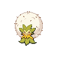

ワタシラガのデータ
基本ステータス
もちもの・メダル・条件付き効果なし。割合の値は％です。待ち時間は短縮率、移動速度はゲーム内の値です。
| Lv | HP | 攻撃 | 防御 | 特攻 | 特防 | 移動速度 | 急所率 | 待ち時間 | HP吸収率 | 通常攻撃の速さ | 貫通 |
|---|---|---|---|---|---|---|---|---|---|---|---|
| 1 | 3278 | 130 | 40 | 40 | 30 | 3800 | 0 | 0 | 0 | 10 | 0 |
| 2 | 3383 | 134 | 44 | 54 | 33 | 3800 | 0 | 0 | 0 | 10.22 | 0 |
| 3 | 3503 | 139 | 48 | 70 | 36 | 3800 | 0 | 0 | 0 | 10.47 | 0 |
| 4 | 4114 | 162 | 69 | 152 | 52 | 3800 | 0 | 0 | 0 | 11.76 | 0 |
| 5 | 4274 | 168 | 74 | 173 | 56 | 3950 | 0 | 5 | 0 | 12.1 | 0 |
| 6 | 4457 | 175 | 80 | 198 | 61 | 3950 | 0 | 5 | 0 | 12.49 | 0 |
| 7 | 4668 | 183 | 87 | 226 | 66 | 4100 | 0 | 5 | 0 | 12.94 | 0 |
| 8 | 4911 | 192 | 95 | 258 | 72 | 4100 | 0 | 5 | 0 | 13.45 | 0 |
| 9 | 5190 | 203 | 104 | 295 | 79 | 4250 | 0 | 10 | 0 | 14.04 | 0 |
| 10 | 5511 | 215 | 115 | 338 | 87 | 4250 | 0 | 10 | 0 | 14.72 | 0 |
| 11 | 5880 | 229 | 128 | 387 | 96 | 4400 | 0 | 10 | 0 | 15.5 | 0 |
| 12 | 6305 | 245 | 142 | 444 | 107 | 4400 | 0 | 10 | 0 | 16.4 | 0 |
| 13 | 6794 | 264 | 159 | 509 | 119 | 4400 | 0 | 10 | 0 | 17.43 | 0 |
| 14 | 7356 | 285 | 178 | 584 | 133 | 4400 | 0 | 10 | 0 | 18.62 | 0 |
| 15 | 8002 | 310 | 200 | 670 | 149 | 4400 | 0 | 10 | 0 | 19.99 | 0 |

ワタシラガ急所・HP吸収などの仕様
急所の対象は通常攻撃です。 基本の急所率は全レベル0%です。
通常攻撃
効果・条件の説明
3回目が強化攻撃になり、相手に3秒間わたを付けます。わたの付いた相手への自分・味方の通常攻撃は追加ダメージを与え、相手の移動速度を1秒間20%下げます。
わざ1
このは
効果・条件の説明
指定方向へ葉を飛ばし、命中地点か最大距離で周囲を攻撃します。
効果・条件
命中した相手の移動速度を2秒間40%下げます。
かふんだんご
効果・条件の説明
指定場所へだんごを投げ、近くのポケモンに付着させて時間差で爆発させます。
付着しなかった時の例外
かふんだんごが着地後0.5秒以内に誰にも付着しなかった場合も、1秒後に同じ回復・ダメージ効果で爆発する。付着後の2秒とは区別が必要。
通常版の効果・条件
味方へ付着すると爆発時にHPを回復し、相手へ付着するとダメージを与えます。
かふんだんご+
効果・条件の説明
強化後の変更点：付着した味方が爆発前に受けるダメージを2秒間20%減らします。付着したポケモンに触れた相手には、爆発前に0.5秒ごとの継続ダメージを与えます。
付着しなかった時の例外
かふんだんごが着地後0.5秒以内に誰にも付着しなかった場合も、1秒後に同じ回復・ダメージ効果で爆発する。付着後の2秒とは区別が必要。
通常版の効果・条件
味方へ付着すると爆発時にHPを回復し、相手へ付着するとダメージを与えます。
グラスミキサー
効果・条件の説明
葉の竜巻を放ち、通った場所に道を残します。
通常版の効果・条件
跡の上にいる味方の移動速度が60%上がり、跡から離れた後も2秒間続きます。竜巻が最遠距離へ達すると、もう一度ダメージを与えます。
グラスミキサー+
効果・条件の説明
強化後の変更点：竜巻が当たった相手の通常攻撃によるダメージを2.5秒間無効にします。
通常版の効果・条件
跡の上にいる味方の移動速度が60%上がり、跡から離れた後も2秒間続きます。竜巻が最遠距離へ達すると、もう一度ダメージを与えます。
ダメージ無効の範囲
グラスミキサー＋で通常攻撃のダメージを防いでも、ダメージではなく命中を条件とする効果は発動する。
わざ2
こうごうせい
効果・条件の説明
自分と周囲の味方のHPを回復します。
コットンガード
効果・条件の説明
周囲の味方にシールドを付け、効果終了時には残った綿でHPを回復します。
通常版の効果・条件
自分と周囲の味方を3秒間シールドで守ります。3秒後、残っていたシールド量の15%をHPとして回復します。
コットンガード+
効果・条件の説明
強化後の変更点：自分と範囲内の味方の移動速度を2秒間30%上げます。
通常版の効果・条件
自分と周囲の味方を3秒間シールドで守ります。3秒後、残っていたシールド量の15%をHPとして回復します。
わたほうし
効果・条件の説明
移動速度を上げて胞子をため、時間がたつと周囲へ放出して攻撃します。
通常版の効果・条件
2秒間胞子をため、その間は自分の移動速度が40%上がります。弾けると相手を0.5秒間吹き飛ばし、移動速度を40%下げます。「わたげのまい」を使うと、時間終了前でも胞子を弾けさせられます。
わたほうし+
効果・条件の説明
強化後の変更点：防御と特防が2秒間50%上がります。
通常版の効果・条件
2秒間胞子をため、その間は自分の移動速度が40%上がります。弾けると相手を0.5秒間吹き飛ばし、移動速度を40%下げます。「わたげのまい」を使うと、時間終了前でも胞子を弾けさせられます。
ユナイトわざ
ユナイトわざ使用後の共通強化
移動速度30%上昇、最大HPの30%のシールド（6秒）
わたげのまい
効果・条件の説明
無敵になって浮かび上がり、障害物を越えて自由に移動します。
効果・条件
最大3秒間浮かび、浮いている間は移動速度が10%上がります。再使用すると早く着地できます。着地攻撃は相手を0.7秒間押し出し、自分と周囲の味方のHPを回復します。
特性
わたげ
効果・条件の説明
効果・条件
発動すると、自分の移動速度が1.5秒間15%上がります。反撃が当たった相手は移動速度が1.5秒間30%下がります。